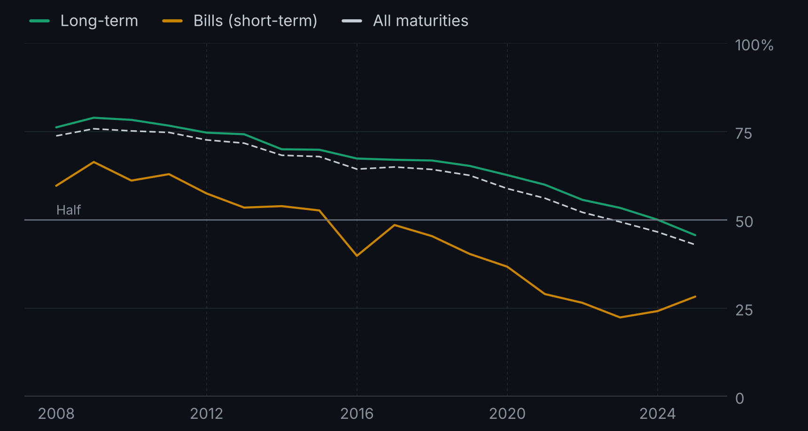

Treasury ownership · Data study · Working note
Who Holds the Treasuries Held Abroad?
Foreign private holdings of U.S. Treasuries have grown substantially. The year they overtook official holdings depends on which securities we count.
The question behind the data
While working on U.S. deficits and the term premium, I wondered whether an increasing share of official buyers could help explain a weaker fiscal relationship. Before pursuing that explanation, I needed to check its premise: had the foreign investor base actually become more official?
The published figures point in the opposite direction over this sample. That made the measurement question more interesting to me. Who is classified as official, what does a change in holdings represent, and how much does the answer depend on the denominator?
This note follows that question through the annual Treasury International Capital survey. It uses public aggregate tables, not confidential security-level records, and remains separate from my provisional emerging-market degree thesis.
More private holdings, a smaller official share
Foreign official holdings of long-term Treasuries rose from $1,684 billion in 2008 to a sample peak of $3,940 billion in 2021, then declined to $3,500 billion in 2025. Private foreign holdings grew from $527 billion to $4,165 billion between the sample endpoints. These are market-value positions, not cumulative purchases.

The official share of foreign long-term holdings fell substantially over the period, from 76.2% to 45.7%, although it did not fall every year. Across all maturities, the corresponding share fell from 73.7% to 43.0%, using the published rounded levels to calculate the combined share.

| Original maturity | First observed year |
|---|---|
| Short-term: one year or less | 2016 |
| All maturities | 2023 |
| Long-term: over one year | 2025 |
In 2024, official long-term holdings were still ahead by just $3 billion, about 0.04% of foreign long-term holdings. That is a small gap, but this exercise does not estimate an uncertainty band around it. A ten-year note with three months remaining is still long-term here: original maturity describes the instrument, not its purchase date or the holder’s current duration exposure.
Two distinctions that change the interpretation
A share of foreign holdings is not a share of the whole market. Foreign investors together held 52.7% of all marketable Treasury debt at market value in 2008 and 33.5% in 2025. That separate denominator includes U.S. holders and the Federal Reserve. It is also different from total federal debt. The market-wide series is kept in its own file.
A holdings change is not a transaction flow. In the year to June 2025, the report records an approximately $60 billion decline in foreign official long-term Treasury holdings. Its accounting includes roughly $100 billion of net sales, $140 billion of positive valuation changes and $110 billion of other negative adjustments. Rounded components do not sum exactly to the rounded total. Leaving out the residual would tell an incomplete story. This package does not reconstruct that decomposition for every year. Source: report Table 1.
What the categories leave open
- Official does not mean price-inelastic. The category follows Treasury’s institutional definition, including central banks, finance ministries and certain other official institutions. It is not an estimated demand curve.
- Private is a broad category. Banks, funds, insurers and other holders can have different mandates and responses to risk. This aggregate split does not identify which groups drove the increase.
- Custody affects what reporters can see. Some securities recorded through private intermediaries may ultimately belong to official institutions. This dataset cannot quantify that amount or identify a particular government behind a custody-center total. See the TIC FAQ.
- Ownership is not a pricing explanation. A smaller official share does not establish why it changed or how it affected yields. The section on price sensitivity below discusses the separate question of estimating demand responses.
Holdings are not price sensitivity
This section was published separately as Who Buys the Debt? (20 October 2026; definitions clarified 1 November 2026) and merged into this study on 7 November 2026.
Who holds Treasuries
US Treasury debt held by the public is spread across very different investors:
- The Federal Reserve, which buys and sells for monetary-policy reasons, not for return.
- Foreign official investors, such as central banks managing reserves, whose mandates can emphasize liquidity, safety and exchange-rate policy alongside return.
- Foreign private investors, such as banks, insurers and funds abroad.
- US banks, insurers, pension funds and money-market funds, often bound by regulation or by the liabilities they need to match.
- Hedge funds, other asset managers and households, with different strategies, constraints and investment horizons.
Three things that are easy to confuse
- Holdings: how much of the stock each group owns at a point in time.
- Purchases: how much each group adds or sells over a period.
- Price sensitivity (elasticity): how much a group changes its holdings when yields move. Lower elasticity means a smaller demand response to a given price change, holding other influences fixed. These responses must be estimated; an official or private label does not measure them.
A large holder is not necessarily a price-setter. What matters for how far yields move is the price sensitivity of the investors who have to absorb new supply.
What a recent Federal Reserve paper finds
Daniel Beltran and Canlin Li (IFDP 1447, September 2026) estimate how price-sensitive each investor group is, then combine those estimates with each group’s share of the market. Their findings, in plain terms:
- The Treasury market as a whole has become more price-sensitive since the early 2000s, mainly because price-inelastic foreign official investors now hold a smaller share and more price-elastic hedge funds and households a larger one.
- In normal times, a more price-sensitive market means smaller yield moves for a given change in supply: elastic investors step in after a small move in price.
- For 2026Q1, they estimate that an extra $100 billion of Treasury bond supply raises five-year yields by about 3 basis points, against around 65 in the early 2000s. Most of that fall reflects the larger Treasury bond market ($23.8 trillion held by the public in 2026Q1, against $2.5 trillion in 2000). Scaled to 1% of that market, the estimated effect is about 8 basis points in 2026Q1, against about 15 from 2000 to 2015.
- The flip side is fragility. When elastic investors step back in stress, as in March 2020, the market suddenly becomes much less elastic and the same shock moves yields much more.
Two effects are easy to mix up here. In this framework, a larger share of price-inelastic holders makes yields more responsive to supply shocks, even though their buying can push the level of yields down. It is the elastic buyers who dampen the response in normal times, and their absence in stress that amplifies it.
Why this matters for fiscal risk
In my study of deficits and the term premium, the link between deficits and the term premium is much weaker after 2008 than before. A natural question is whether changes in who holds the debt help explain that. The direction is not obvious: in Beltran and Li’s framework, a more price-inelastic holder base would amplify supply effects rather than mute them. I have not tested this. Doing it properly needs a design that separates holder composition from the crises and Fed purchases that changed at the same time; it is on the list of questions I’m exploring next.
Caveats about the data
- Country attribution in TIC data can be affected by foreign custodians: the ultimate holder’s residence is not always visible to a U.S. reporter. This limits country-level interpretation; it does not establish deliberate concealment.
- In the Fed’s Financial Accounts, the household sector, which includes hedge funds, is largely a residual: what is left after other sectors are measured.
- The authors treat these as sample-average estimates, not fixed structural parameters; their values depend on the model and identification assumptions.
Sources, checks and downloads
The principal source is Foreign Portfolio Holdings of U.S. Securities, as of June 30, 2025, published in April 2026 by Treasury and the Federal Reserve. Its Exhibits 7 and 8 provide the 2008–2025 official/private series. Earlier reports from 2008, 2016 and 2024 provide selected vintage comparisons; Treasury’s historical data file supplies a separate totals check.
The checks reconcile official and private holdings to totals, calculated shares to published percentages, and totals across tables and files, allowing for stated rounding tolerances. No revisions were found in 54 overlapping Treasury rows from those selected vintages. That does not mean TIC data are never revised. Interim annual surveys use a smaller reporting panel than benchmark surveys, with coverage adjustments described in the methodology.
The full pipeline was rerun in a temporary copy by a separate AI reviewer, reproducing all nine CSV artifacts and the saved validation results. The public analytical file subsequently standardizes the 2024 date field to June 28, matching the report title; its numerical values and all chart data remain unchanged.
- Official/private analytical dataset (CSV): 54 observations, three maturity definitions.
- Foreign share of all marketable Treasuries (CSV): 18 annual observations.
- Definitions, source inventory and methodological limits (Markdown).
- Saved validation report (Markdown) and machine-readable checks (JSON).
- Code and extracted tables (ZIP). Includes exact dependencies and instructions to rebuild the datasets and charts from the included extracts. Full PDF extraction and source-hash validation require the original public source files, which are linked but not bundled. Live source files may change.
Contribution. I framed the question and scope. Extraction and validation were developed with an AI coding assistant under my direction. I am reviewing the interpretation; Treasury and the Federal Reserve produce the underlying statistics.
Next question. I want to understand how much the aggregate holdings changes reflect transactions, valuation and reporting differences before treating the shift in ownership as an explanation for market pricing.
Working research and education only. This note reports descriptive holdings patterns. It is not an investment recommendation, a causal result or a completed degree thesis.